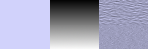

Figura 17.245. Da esquerda para a direita: imagem original, mapeada, imagem resultante

A textura possui três tiras: uma área preta sólida, uma área vertical de degradê, uma área branca sólida. Assim como você pode ver, na imagem resultante, essas zonas da imagem que correspondem a áreas sólidas da textura, não estão desfocagem. Apenas a zona da imagem correspondente à área de degradê da textura está desfocada.
“LIC” stands for Line Integral Convolution, a mathematical method. This filter is used to apply a directional blur to an image, or to create textures. It could be called “Astigmatism” as it blurs certain directions in the image.
It uses a blur map. Unlike other maps, this filter doesn't use gray levels of this blur map. Filter takes in account only gradient direction(s). Image pixels corresponding to solid areas of the map are ignored.
![[Nota]](images/note.png)
|
Nota |
|---|---|
|
If the image is in grayscale mode or indexed mode, this menu entry is disabled. |

![[Dica]](images/tip.png)
|
Dica |
|---|---|
|
- Canal de efeitos
-
Selecionando matiz, saturação ou brilho (=valor), o filtro ira usar esse canal para tratar a imagem.
- Operador de efeito
-
A opção “derivativo” inverte a direção do “degradê”:
Figura 17.247. Exemplo da opção derivativo

Usando um mapeamento quadrado de degradê. O operador de efeito está em “degradê” na esquerda, e em “derivativa” na direita: o que estava nítido está borrado e vice-versa.
- Convolver
-
Você pode usar dois tipos de convolução. Este é o primeiro parâmetro que você tem para definir:
- Com ruído branco
-
Com ruído branco é um nome acústico. É um ruído onde todas as frequências possuem a mesma amplitude. Aqui, essa opção é usada para criar texturas.
- Com imagem de origem
-
A imagem de origem será desfocada.
- Imagem de efeito
-
Este é o mapeamento para desfoques ou texturas direcionais. Este mapeamento precisa ter as mesmas direções das imagens originais. Isso precisa ser feito preferencialmente em uma imagem em escalas-de-cinza.
Figura 17.248. Desfocando com um mapeamento de degradê vertical

Com um mapeamento de degradê vertical, apenas linhas verticais serão desfocadas.
Figura 17.249. Desfocando com um mapeamento de degradê quadrado

Um mapeamento de degradê é dividido em quatro degradês triangulares: cada um deles possui sua própria direção. Em cada área da imagem correspondente a degradês triangulares acontecerá de apenas linhas com as mesmas direções que os do degradê serão desfocadas.
Figura 17.250. Exemplo de textura

Com a opção de “com ruído branco” marcada. Outras opções foram as pré-determinadas. Com um mapeamento de degradê vertical, a textura das “fibras” seguem a direção horizontal.
- Comprimento de filtro
-
Durante a aplicação da desfocagem, essa opção controla o quão importante a desfocagem é. Ao criar uma textura, isso controla o quão áspero a textura será: valores baixos resultam em uma superfície suave; valores altos em superfícies ásperas.
Figura 17.251. Exemplo da ação do comprimento do filtro na desfocagem

Na esquerda: uma linha vertical, um pixel de largura (zoom de 800%). Na direita: a mesma linha, após a aplicação de uma desfocagem vertical com um comprimento de filtro em 3. Você pode ver que a largura da desfocagem é de 6 pixels, 3 pixels em cada lado.
Figura 17.252. Exemplo de comprimento do filtro na textura

Na esquerda: uma textura com comprimento de filtro = 3. Na direita, a mesma textura com comprimento de filtro = 24.
- Magnitude de ruído
-
Essa opção controla a quantidade e tamanho do ruído branco. Baixos valores produzem superfícies com um leve ruído. Valores altos produzem texturas excessivamente ruidosas.
- Passos de integração
-
Essa opção controla a influência do mapa de degradê na textura.
Figura 17.254. Exemplo da ação dos passos de integração na textura

Na esquerda: passos de integração = 2. Na direita: passos de integração = 4.
- Valor mínimo, Valor máximo
-
Ambos os valores determinam um controlador de contraste da textura: valores baixos resultam em alto contraste e altos valores resultam em baixo contraste.
Figura 17.255. Exemplo de ação dos valores min/máx na textura

Valor mínimo = -4,0. Valores máximos = 5,0.